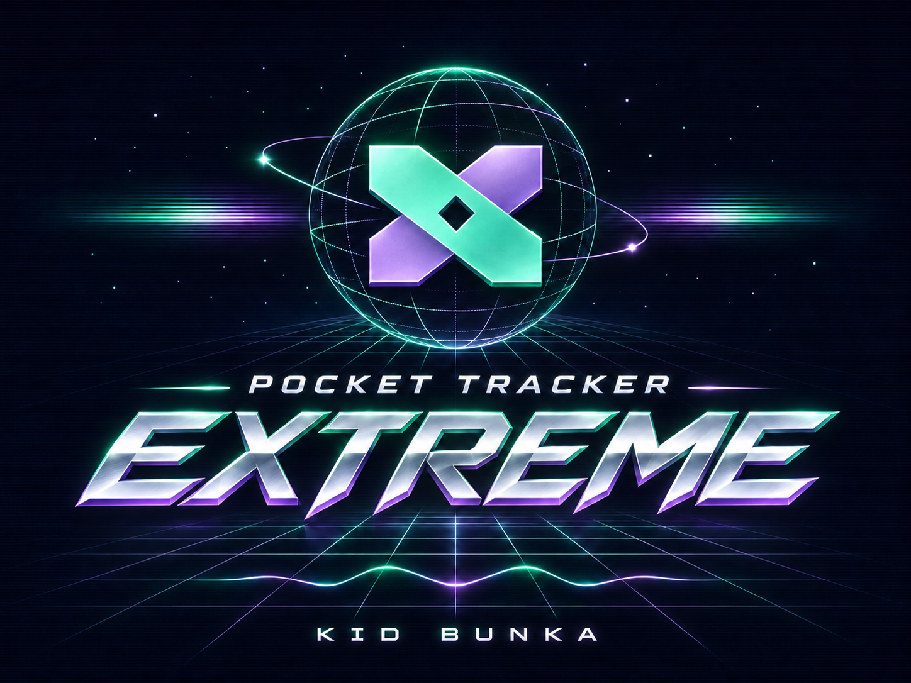

Drumlab & groove
Assign 5–8 sounds, choose a rhythmic direction and generate a pattern across tracker tracks. Keep the idea, regenerate it or edit every step.
 Build a groove
Build a groove Open source · Android + TrimUI Brick
Find a sound. Pull it apart. Make it yours. A handheld tracker built for deep sampling, expressive synthesis and the kind of happy accidents that turn into tracks.

HANDHELD MUSIC SYSTEM / 0.2.0 BETA01 / The studio
A familiar tracker at the center. A dedicated Studio around it. Move from a sample to a synth, a groove or a mastering decision without leaving your musical idea.
SYNTHESIS / LIVE SOUND DESIGN
Virtual analog, FM, wavetable, percussion, physical modeling and granular textures. Explore Plaits, Braids, Rings and Elements-based engines, Clouds-derived granular voices and additional Studio DSP models.
Each family gets relevant parameters and a visual identity. Loaded synth instruments support live parameter changes while the sequence runs; hold L for a steady audition note.
Inside the synth Studio
SAMPLING / PRECISION
Zoom into individual frames, place exact boundaries and turn long audio into playable material. Trim, crop, normalize, fade, reverse, stretch, repair clicks and work with detailed slice markers.
Choose transient, equal-division or manual slicing, inspect each slice and bring the result back into your arrangement.
From recording to slices
THE DIGGING ROOM
Browse Internet sources from inside the Studio. Search a genre, try a random suggestion, preview a track and capture the part that catches your ear.
Source access and content permissions vary. Use material you own or are allowed to sample. YouTube extraction is an experimental source path, not a promise of permission or permanent availability.
The full digging workflow
Assign 5–8 sounds, choose a rhythmic direction and generate a pattern across tracker tracks. Keep the idea, regenerate it or edit every step.
Build a groove Beat repeats, reverse rolls, filters, tape stops and more. Turn a running sequence into a performance with momentary sound changes.
 Shape the moment
Shape the moment Go from subtle color to transformed textures. Explore effect presets, Mutable-derived texture and modulation, wet/dry balance, feedback and saturation as part of the arrangement.
 Explore the rack
Explore the rack Shape the master with drive, compression, stereo width, high-pass filtering, output gain and a peak ceiling. Save a starting point, then trust your ears.
 Finish the mix
Finish the mix 02 / One musical path
Load a local sound, choose a synth preset or bring in a permitted Internet clip.
Trim and slice audio, or change the engine's sound parameters while listening.
Write notes across eight tracks. Use Drumlab as a starting point, then add your own decisions.
Add punch effects, refine the mix, arrange the song and render a finished file.
A LIBRARY THAT INVITES EXPLORATION
Browse 2,048 categorized instrument presets: basses, leads, keys, pads, evolving textures, physical models and a broad drum-synthesis collection. These are synthesis recipes, not a bundled collection of sampled commercial records.
The engine list includes models and articulations. Variations are not counted as independent synthesizer engines.
Find your next sound

YOUR STUDIO / YOUR LOOK
Dark studio surfaces, mint or violet highlights, subtle grids and tactile textures. Choose a look that feels right on your screen, with readable values and the same layout beneath it.
Make it your studioM8 project bridgeBring supported song and sampler data across, with an import report that makes omissions visible.
SoundFonts & MIDIAdd your own SoundFonts or use external MIDI instruments as part of a larger setup.
Composed and rendered through the tracker engine. Open the editable project ↗
Original music and supplied project material: CC BY 4.0 · Kid Bunka.
A TRACKER IN MOTION
Listen to “Mint Afterhours”: a hip-hop groove that opens into a double-time breakbeat section. The accompanying film uses the original tracker composition, real application captures and a dark-violet Brick presentation. These are app-rendered captures inside an illustrated Brick presentation, rather than physical-device camera footage.
No synthetic voice-over. Music, motion and concise on-screen guidance. Watch the film on YouTube ↗.
03 / Take it with you
YOUR FIRST SESSION
Install KNULLI on a spare card, add the tracker, copy your samples and make your first sound. Already have a working KNULLI card? Go straight to installing the app.
Android phones and gaming handhelds that meet the requirements, including RG405V as a target profile. Use physical controls or the touch layout, with a folder you choose for your music.
Download Android APK Android setup guide Check handheld compatibilityA native music app for the Brick running KNULLI. Keep your samples and projects together on the SD card.
Download Brick package Brick setup guideAn experimental native package for compatible 64-bit ARM Linux firmware, with glibc 2.31+, SDL2 and a Ports/PortMaster setup. Physical R36S testing is still pending.
Download community ZIP Community test requirementsGeneral workflows have been user-tested on the Brick with no issues reported so far; full acceptance testing is still in progress. Android has build and emulator checks. Direct iPhone-to-Brick capture failed in the user's repeated hardware test with the current setup; both ports were reported to charge only. Class-compliant interfaces remain a separate, pending hardware test. Read the feature status before relying on a hardware-specific workflow.
MORE POCKETS / CLEAR PLATFORM CHOICES
Android and Linux handhelds use different packages. Choose the build for the operating system your device actually runs, then check the controls and audio route.
| Device or platform | Package | Current evidence |
|---|---|---|
| Anbernic RG405VAndroid target profile | Android APK | Physical test pendingExpected to be a suitable Android target when its OS and CPU meet the requirements. No device certification is claimed. |
| TrimUI BrickKNULLI / native Linux | Brick ZIP | User-testedStarts and general workflows have been tested with no issues reported so far; full acceptance testing continues. |
| R36S and compatible Linux targetsFirmware and hardware revisions vary | R36S Community Test ZIP | ExperimentalRequires compatible 64-bit ARM Linux firmware, glibc 2.31+, native SDL2 and Ports support. No physical R36S result is recorded yet. |
| Other Android handheldsAndroid 8.0+ / matching CPU build | Android APK | Compatibility candidatesStandard Android gamepad input and the touch fallback provide a common starting point. Model-specific testing is still needed. |
On a small screen, swipe the table to read every column.
Android-based Anbernic RG models, Retroid Pocket models, AYN Odin and AYANEO Android handhelds are useful candidates to test. This list names families, not a guarantee for every model.
INDEPENDENT / COMMUNITY SUPPORTED
If this little studio helps you make music, you can support its ongoing development. Pocket Tracker Extreme, its source and every feature remain free.
MADE FOR MAKING THINGS
Pocket Tracker Extreme is a Kid Bunka project built on the work of PocketTracker and its contributors. It includes open-source sound engines and effects from an extraordinary community, including Emilie Gillet's Mutable Instruments code.
Application source is shared under GPL-3.0-or-later. Component licenses and credits remain with the project. This is an independent community fork, not an official product of Mutable Instruments, Polyend, TrimUI or KNULLI.